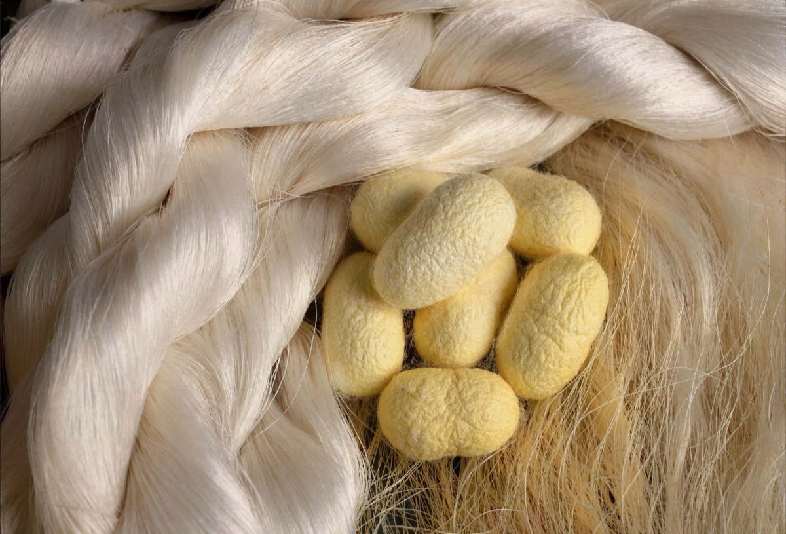

Strategic Partnership
Saco Esa Silk
Suzhou — Silk Production & Strategic Partnership
← Back to Anhui FactoryThrough a strategic partnership with a specialized silk manufacturer in Suzhou, SACO extends its capabilities into premium silk products and materials. This collaboration allows us to support brands with high-quality silk developments, combining traditional silk expertise with modern production standards.
Production
The facility integrates design, manufacturing and export of silk products, covering a wide range of categories including garments, accessories and home textiles.
Production includes silk garments such as dresses, shirts and robes, as well as accessories like scarves, eye masks and hair accessories, alongside silk bedding and fabrics.
Quality
We work with high-grade mulberry silk, including 6A quality standards, ensuring premium performance, softness and durability across all developments.
Silk Capabilities
This partnership enables SACO to integrate silk into its broader product development platform, supporting brands looking for premium materials and refined product categories.